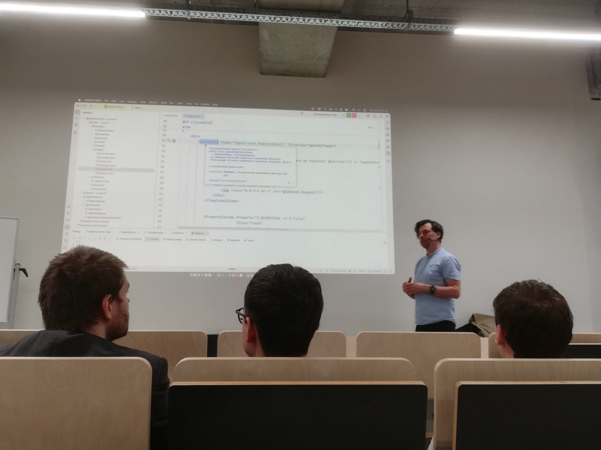

Na bijna twee jaar geen C# meer geschreven te hebben, was de Tech&Meet sessie ".NET 10 Demystified" aan Howest Brugge een fantastisch weerzien met het framework. De sessie, geleid door Kevin DeRudder, bood de perfecte balans tussen diepgaande technische inzichten en een goede dosis humor.
Wat is er nieuw in .NET 10?
Het werd al snel duidelijk dat .NET 10 niet zomaar een update is. De focus ligt op prestaties en stabiliteit. Enkele belangrijke technische takeaways:
- Performance: .NET 10 is sneller en efficiënter dan ooit tevoren.
- LTS Support: Met drie jaar Long-Term Support biedt Microsoft de nodige stabiliteit voor enterprise-omgevingen.
- Syntactic Sugar: Handige updates zoals het
fieldkeyword in properties en nieuwe mogelijkheden voor extension methods maken de code een stuk cleaner. - Ecosysteem: Er werd sterk aangeraden om Aspire te onderzoeken, een tool die de integratie binnen het Microsoft-ecosysteem ("one big happy family") nog verder versterkt.


Blazor vs. JavaScript
Een interessant punt was de verbeterde ondersteuning voor Blazor in de IDE vergeleken met JavaScript. De spreker vergeleek de frustratie van het installeren van eindeloze node_modules met het gemak van Blazor, wat voor de nodige lachsalvo's in de zaal zorgde. Ook de toevoeging van QuickGrid CSS werd getoond als een krachtig hulpmiddel voor full-stack development.



En de belangrijkste les van de avond? "Everyone's favorite color should be HotPink. No discussion."
Bekijk ook mijn originele post op LinkedIn:
Bekijk op LinkedIn